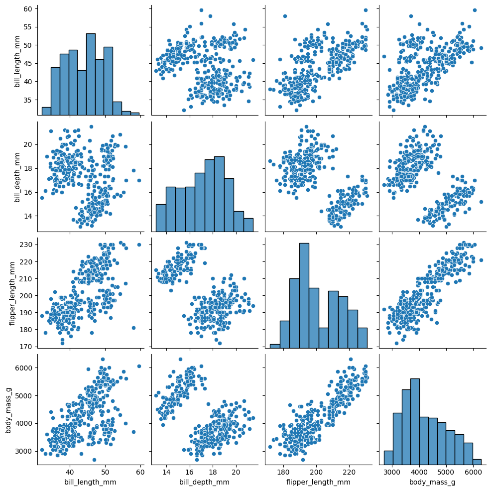
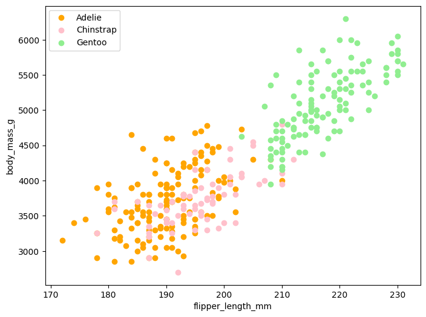
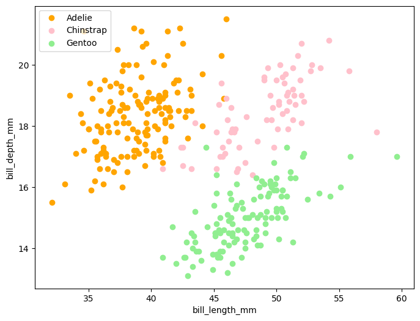
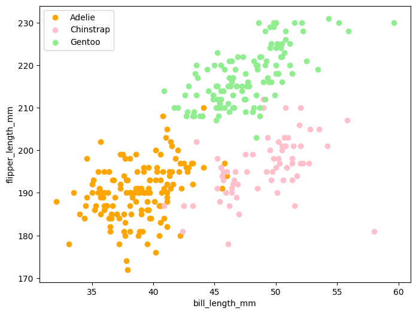
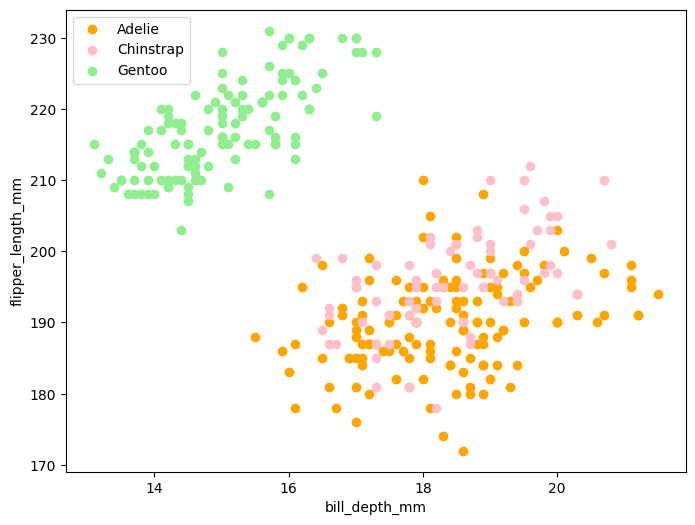

# run this cell to import needed packages
import pandas as pd
import numpy as np
from sklearn.model_selection import train_test_split
from sklearn.preprocessing import LabelEncoder
from sklearn.linear_model import LogisticRegression
import matplotlib.pyplot as plt
import seaborn as sns
%matplotlib inlineIntroductory Machine Learning: Assignment 2
Deadline:
Assignment 2 is due Thursday, February 19 at 11:59pm. Late work will not be accepted as per the course policies (see the syllabus on Canvas).
Directly sharing answers is not okay, but discussing problems with the course staff or with other students is encouraged.
You should start early so that you have time to get help if you’re stuck. The drop-in office hours schedule can be found on Canvas. You can also post questions or start discussions on Ed Discussion. The assignment may look long at first glance, but the problems are broken up into steps that should help you to make steady progress.
Submission:
Submit your assignment as a .pdf on Gradescope. You can access Gradescope through Canvas on the left-side of the class home page. The problems in each homework assignment are numbered. Note: When submitting on Gradescope, please select the correct pages of your pdf that correspond to each problem. This will allow graders to find your complete solution to each problem.
To produce the .pdf, please convert to html and then print to pdf. (You may want to use your pdf print menu to scale the pages to be sure that cells are not truncated.) To convert to html, you can use this converter notebook.
Topics 1. Logistic regression 2. Regularization 3. Stochastic gradient descent 4. Trees 5. Bias-variance tradeoff
Problem 1: Penguins: An ice example (20 points)
Can you tell one penguin species from another? Let’s put what we’ve learned about logistic regression to (a very cute) test!

We first need to learn a little about the anatomy of our flightless feathered friends. The culmen is the upper ridge of a bird’s bill.

In our dataset, the culmen length and depth are called bill_length_mm and bill_depth_mm.
*Data were collected and made available by Dr. Kristen Gorman and the Palmer Station, Antarctica LTER, a member of the Long Term Ecological Research Network. Artwork by @allison_horst.
# just run this cell to read in the data, and drop a couple variables
df = pd.read_csv('https://github.com/YData123/sds265-sp26/raw/main/assignments/assn2/penguins.csv')
df = df.drop(columns=['index','year','island'])
df = df.dropna(axis=0)
df
| species | bill_length_mm | bill_depth_mm | flipper_length_mm | body_mass_g | sex | |
|---|---|---|---|---|---|---|
| 0 | Adelie | 39.1 | 18.7 | 181.0 | 3750.0 | male |
| 1 | Adelie | 39.5 | 17.4 | 186.0 | 3800.0 | female |
| 2 | Adelie | 40.3 | 18.0 | 195.0 | 3250.0 | female |
| 4 | Adelie | 36.7 | 19.3 | 193.0 | 3450.0 | female |
| 5 | Adelie | 39.3 | 20.6 | 190.0 | 3650.0 | male |
| ... | ... | ... | ... | ... | ... | ... |
| 339 | Chinstrap | 55.8 | 19.8 | 207.0 | 4000.0 | male |
| 340 | Chinstrap | 43.5 | 18.1 | 202.0 | 3400.0 | female |
| 341 | Chinstrap | 49.6 | 18.2 | 193.0 | 3775.0 | male |
| 342 | Chinstrap | 50.8 | 19.0 | 210.0 | 4100.0 | male |
| 343 | Chinstrap | 50.2 | 18.7 | 198.0 | 3775.0 | female |
333 rows × 6 columns
# Next we'll make the sex variable binary, and separate out
# species as the label to predict
species = list(set(df['species']))
df['class'] = LabelEncoder().fit_transform(df['species'])
sex = [int(list(df['sex'])[j]=='male') for j in range(len(df))]
df['sex'] = sex
df = df.drop(columns=['species'])
df1.1 Plotting the data
The following cell shows a scatter plot of all pairs of variables. We showed this type of plot in class for the California housing data. Describe several entries in this plot, and what it tells you about the the relationship between the pairs of covariates. Do the relationships make intuitive sense? Why or why not? Do the data appear to have any obvious outliers or unusual patterns? Why or why not?
_ = sns.pairplot(df)
[The pairplot shows several clear relationships among the covariates. For example, flipper_length_mm and body_mass_g have a strong positive association (larger penguins tend to be heavier), and bill_length_mm is also generally positively related to body_mass_g and flipper_length_mm. Some pairs (e.g., bill_length_mm vs bill_depth_mm) show more spread and possible clustering, suggesting different species occupy different regions of the feature space. The binary sex variable appears as two horizontal/vertical bands in panels where it is plotted, and class appears as discrete bands because it is an encoded label. Overall, the relationships are intuitive for body-size measures, and there are no extremely isolated points—most “outliers” look like natural extremes within a species cluster rather than obvious data errors.]
def plot_features(df, feature1_name, feature2_name):
fig = plt.figure(figsize=(8,6))
ax = fig.add_subplot(111)
colors = ['orange', 'pink', 'lightgreen']
species = ['Adelie', 'Chinstrap', 'Gentoo']
for c in range(3):
mask = (df['class']==c)
plt.scatter(df[feature1_name][mask],
df[feature2_name][mask],
color=colors[c], label=species[c])
plt.xlabel(feature1_name)
plt.ylabel(feature2_name)
plt.legend(loc='upper left')
plt.show()
1.1 Plotting the data (continued)
Next, using the plot_features function above, give additional plots of pairs of features, shown together with the class labels. An example of such a plot is shown below:

For each plot, discuss why the pair of features may or not be helpful in discriminating between the three species of penguins.
# your code and markdown here
df['class'] = LabelEncoder().fit_transform(df['species'])
df['sex'] = (df['sex'] == 'male').astype(int)
plot_features(df, 'flipper_length_mm', 'body_mass_g')
plot_features(df, 'bill_length_mm', 'bill_depth_mm')
plot_features(df, 'bill_length_mm', 'flipper_length_mm')
plot_features(df, 'bill_depth_mm', 'flipper_length_mm')



[flipper_length_mm vs body_mass_g: Very helpful. Gentoo tend to cluster at higher flipper length and higher mass, separating well from the other two; Adelie are generally smaller; Chinstrap often overlap with Adelie/Gentoo in the middle.
bill_length_mm vs bill_depth_mm: Helpful. Adelie often have shorter bills with relatively deeper bill depth, while Chinstrap tend to have longer bills; Gentoo can overlap but often sit in a different region than Adelie.
bill_length_mm vs flipper_length_mm: Helpful. Gentoo typically have longer flippers; Chinstrap tend to have longer bills than Adelie; overlap exists but clusters are more separable than with a single feature.
bill_depth_mm vs flipper_length_mm: Moderately helpful. Gentoo separate mainly by longer flippers, but Adelie vs Chinstrap can overlap in bill depth, so this pair is less clean than (bill_length, bill_depth).]
# Just run the following cell, to get inputs X and labels y
y = np.array(df['class'])
X = df.copy()
X = X.drop(columns=['class'])
X| species | bill_length_mm | bill_depth_mm | flipper_length_mm | body_mass_g | sex | |
|---|---|---|---|---|---|---|
| 0 | Adelie | 39.1 | 18.7 | 181.0 | 3750.0 | 1 |
| 1 | Adelie | 39.5 | 17.4 | 186.0 | 3800.0 | 0 |
| 2 | Adelie | 40.3 | 18.0 | 195.0 | 3250.0 | 0 |
| 4 | Adelie | 36.7 | 19.3 | 193.0 | 3450.0 | 0 |
| 5 | Adelie | 39.3 | 20.6 | 190.0 | 3650.0 | 1 |
| ... | ... | ... | ... | ... | ... | ... |
| 339 | Chinstrap | 55.8 | 19.8 | 207.0 | 4000.0 | 1 |
| 340 | Chinstrap | 43.5 | 18.1 | 202.0 | 3400.0 | 0 |
| 341 | Chinstrap | 49.6 | 18.2 | 193.0 | 3775.0 | 1 |
| 342 | Chinstrap | 50.8 | 19.0 | 210.0 | 4100.0 | 1 |
| 343 | Chinstrap | 50.2 | 18.7 | 198.0 | 3775.0 | 0 |
333 rows × 6 columns
1.2 Standardize the data
Next, standardize the data, so that each column of X has mean zero and standard deviation one. Note that after you have done this transformation, X should still be a pandas.DataFrame. Then, briefly explain why it is important to standardize the variables in the logistic regression models that you will train below.
# Your code here
num_cols = X.select_dtypes(include='number').columns
X[num_cols] = (X[num_cols] - X[num_cols].mean()) / X[num_cols].std()
X| species | bill_length_mm | bill_depth_mm | flipper_length_mm | body_mass_g | sex | |
|---|---|---|---|---|---|---|
| 0 | Adelie | -0.894695 | 0.779559 | -1.424608 | -0.567621 | 0.989542 |
| 1 | Adelie | -0.821552 | 0.119404 | -1.067867 | -0.505525 | -1.007534 |
| 2 | Adelie | -0.675264 | 0.424091 | -0.425733 | -1.188572 | -1.007534 |
| 4 | Adelie | -1.333559 | 1.084246 | -0.568429 | -0.940192 | -1.007534 |
| 5 | Adelie | -0.858123 | 1.744400 | -0.782474 | -0.691811 | 0.989542 |
| ... | ... | ... | ... | ... | ... | ... |
| 339 | Chinstrap | 2.159064 | 1.338151 | 0.430446 | -0.257145 | 0.989542 |
| 340 | Chinstrap | -0.090112 | 0.474872 | 0.073705 | -1.002287 | -1.007534 |
| 341 | Chinstrap | 1.025333 | 0.525653 | -0.568429 | -0.536573 | 0.989542 |
| 342 | Chinstrap | 1.244765 | 0.931902 | 0.644491 | -0.132954 | 0.989542 |
| 343 | Chinstrap | 1.135049 | 0.779559 | -0.211688 | -0.536573 | -1.007534 |
333 rows × 6 columns
[Standardizing puts all numeric features on the same scale (mean 0, standard deviation 1). This matters for logistic regression because features measured in larger units (e.g., body mass) would otherwise dominate the optimization and regularization, making coefficients harder to compare and potentially slowing or destabilizing convergence.]
1.3 Fit logistic regressions
As done in the class demo for mushrooms and iris flowers, you will now construct a series of logistic regression models using an increasing number of training points.
Specifically, we want you to:
- Vary the sample size from 10% of the data to 90% of the data, in increments of 10%
- For each sample size, train a logistic regression model on randomly selected training points, and test on the remaining data
- For each sample size, run 100 trials and average the error rates
- Plot the resulting average error rates as a function of sample percentage of the data
We will use the function sklearn.model_selection.train_test_split in each trial to randomly split the data into training and test sets.
Here we repeat exactly what we did during class using lr = LogisticRegression(solver='lbfgs', multi_class='multinomial') to fit a logistic regression model to predict the three species (Adelie, Chinstrap, and Gentoo).
After filling in your code, simply run this cell to plot a learning curve of error rate as a function of training percentage.
lr = LogisticRegression(penalty='l2', C=.1)
lr_error_rate = []
trials = 100
train_percent = np.linspace(.1, .9, 9)
# For each training set percentage, create train/test split accordingly
# and run logistic regression 100 times and calculate the average error rate
"""
function input:
X: data
y: label
ratio: train data percentage
trails: number of trails to run
function return:
the average error rate with this train data percentage
"""
def get_err_rate(X, y, ratio, trials):
# todo:
# your code starts here
errs = []
for _ in range(trials):
X_tr, X_te, y_tr, y_te = train_test_split(X, y, train_size=ratio)
lr.fit(X_tr, y_tr)
errs.append(1 - lr.score(X_te, y_te))
return np.mean(errs)
# your code ends here
# Use get_err_rate to find the error rate for respective split size
for p in train_percent:
lr_error_rate.append(get_err_rate(X, y, p, trials))
plt.plot(train_percent, lr_error_rate)
plt.xlabel('train percent')
plt.ylabel('error')
plt.show()1.4 Choose good feature pairs
Which pair of variables gives the best predictions of the species of penguins? Run some experiments and report back below!
Note that there are \({5 \choose 2} = 10\) ways you can choose a pair of features. You may want to run a loop to automate this. And choose a reasonable ratio from the stable region of plot 1.3, such as 0.7 :)
# todo:
# your code starts here
# your code ends here1.5 Visualize the decision boundries
Using the two features you chose as the best, and at least two additional pairs of features, visualize the decision boundries of the logistic regression models.
Is it what you expected? Where are you observing incorrect predictions? Describe why the decision boundaries make sense, from your understanding of the logistic regression model.
Use the function plot_decision_boundaries that we supply below. (You may also modify this function to your liking.) An example plot is shown here:

def plot_decision_boundaries(X, y, model, error):
X2 = np.array(X)
b = model.intercept_
beta = model.coef_.T
colors = ['orange', 'pink', 'lightgreen']
h = 0.015
x_min, x_max = X2[:, 0].min() - .5, X2[:, 0].max() + .5
y_min, y_max = X2[:, 1].min() - .5, X2[:, 1].max() + .5
xx, yy = np.meshgrid(np.arange(x_min, x_max, h),
np.arange(y_min, y_max, h))
Z = np.dot(np.c_[xx.ravel(), yy.ravel()], beta) + b
Z = np.argmax(Z, axis=1)
Z = Z.reshape(xx.shape)
fig = plt.figure(figsize=(8,8))
plt.contourf(xx, yy, Z, levels=[0,.5,1.5,2.5], colors=colors, alpha=0.5)
for c in range(3):
mask = (y==c)
plt.scatter(X2[np.array(mask),0], X2[np.array(mask),1], color=colors[c], label=species[c])
plt.xlim(xx.min(), xx.max())
plt.ylim(yy.min(), yy.max())
plt.legend(loc='upper left')
plt.title('error rate: %.2f' % error)
plt.xlabel(X.columns[0])
plt.ylabel(X.columns[1])# Your code and markdown here1.6 (Optional) Use different regularization levels (2 points EC)
Now that you have a working logistic regression algorithm, explore how to set the regularization level \(C=1/\lambda\). Use an appropriate cross-validation procedure to choose the regularization level, and explain your results.
# Your code and markdown hereHooray! You are now a penguin master!
Problem 2: Mini-Batch Gradient Descent (25 points)
Consider a univariate logistic regression where we are trying to predict \(Y\), which can take the value \(0\) or \(1\), from the variable \(X\), which takes real values. Recall from lecture that we need to estimate parameters \(\beta_{0}\) and \(\beta_{1}\) by minimizing the penalized loss function:
\(L(\beta_{0}, \beta_{1}) = \frac{1}{n}\sum\limits_{i=1}^{n} \left[ log\left( 1 + e^{\beta_{0} + X_{i}\beta_{1}}\right) - Y_{i}\left(\beta_{0} + X_{i}\beta_{1}\right)\right] + \lambda \beta_{1}^{2}\) .
Note that generally the intercept is not penalized.
In this problem, we will implement mini-batch gradient descent. At each iteration, a random set of \(m\) samples from all \(n\) samples is used to calculate the loss and gradient, which is the change in the loss with respect to the parameters. We then update the estimates of \(\beta_{0}\) and \(\beta_{1}\) based on the gradient.
Run the next cell to simulate data using the parameter values of \(\beta_{0} = 3\) and \(\beta_{1} = -5\).
n = 10000
np.random.seed(265)
x1 = np.random.uniform(-5, 5, size=n)
beta0 = 3
beta1 = -5
p = np.exp(beta0 + x1*beta1)/(1 + np.exp(beta0 + beta1*x1))
y = np.random.binomial(1, p, size=n)Here is a helper function for plotting we’ll use later. Just run this cell; don’t change it.
def plot_betas_and_loss(beta0_all, beta1_all, loss_all, title=''):
fig, ax = plt.subplots(1, 3, figsize=(18,5))
ax[0].plot(np.arange(len(beta0_all)), beta0_all)
ax[0].hlines(beta0, xmin=0, xmax=len(beta0_all),color = 'r')
ax[0].set_xlabel("Iteration", fontsize=12)
ax[0].set_ylabel(r"$\widehat{\beta}_{0}$", fontsize=12)
ax[1].plot(np.arange(len(beta1_all)), beta1_all)
ax[1].hlines(beta1, xmin=0, xmax=len(beta1_all),color = 'r')
ax[1].set_xlabel("Iteration", fontsize=12)
ax[1].set_ylabel(r"$\widehat{\beta}_{1}$", fontsize=12)
ax[1].set_title(title)
ax[2].plot(np.arange(len(loss_all)), loss_all)
ax[2].set_xlabel("Iteration", fontsize=12)
ax[2].set_ylabel("Loss", fontsize=12)
plt.show()2.1 Deriving the updates
Let \(L_{t}(\beta_{0}, \beta_{1})\) be the loss at \(t\)-th iteration. For given values of \(\beta_{0}\) and \(\beta_{1}\), the vector \(\left( \dfrac{\partial}{\partial \beta_{0}} L_{t}(\beta_{0}, \beta_{1}), \dfrac{\partial}{\partial \beta_{1}} L_{t}(\beta_{0}, \beta_{1}) \right)^{T}\) is called the gradient of \(L_{t}(\beta_{0}, \beta_{1})\) and is denoted \(\nabla L_{t}(\beta_{0}, \beta_{1})\).
We calculate the derivative of \(L_{t}(\beta_{0}, \beta_{1})\) with respect to \(\beta_{0}\), treating \(\beta_{1}\) as a constant. (i.e. calculate \(\dfrac{\partial}{\partial \beta_{0}} L_{t}(\beta_{0}, \beta_{1})\)):
\(\dfrac{\partial}{\partial \beta_{0}} L(\beta_{0}, \beta_{1}) = \frac{1}{n}\sum\limits_{i=1}^{n} \left(\dfrac{e^{\beta_{0} + X_{i}\beta_{1}}}{1+e^{\beta_{0} + X_{i}\beta_{1}}}- Y_{i}\right)\).
Now calculate the derivative of \(L_{t}(\beta_{0}, \beta_{1})\) with respect to \(\beta_{1}\), treating \(\beta_{0}\) as a constant. (i.e. calculate \(\dfrac{\partial}{\partial \beta_{1}} L_{t}(\beta_{0}, \beta_{1})\)).
Be sure to show your work by either typing it in here using LaTeX, or by taking a picture of your handwritten solutions and displaying them here in the notebook. (If you choose the latter of these two options, be sure that the display is large enough and legible. Please also upload a photo seperately to Gradescope in case the embedded image failed.)
[put your solution here]
When we implement mini-batch stochastic gradient descent, we will use these formulas, but apply them to a mini-batch of \(m\) randomly chosen datapoints, rather than to all \(n\) datapoints (in our case \(n=10,000\)). Typically \(m\) is chosen to be much, much smaller than \(n\).
2.2 The key ingredients
Complete the function update in the following cell which takes values for \(\beta_{0}\) and \(\beta_{1}\), a list inds containing the indexes of the \(m\) selected samples, as well as a step-size \(\eta\), and returns updated values for \(\beta_{0}\) and \(\beta_{1}\) from one step of gradient descent (using all the data and your answer to Part a).
def update(b0, b1, inds, step_size, lamb):
L_partial0 = ... # your implementation here, can be more than one line
L_partial1 = ... # your implementation here, can be more than one line
b0 -= step_size * L_partial0
b1 -= step_size * L_partial1
return (b0, b1)Now complete the function in the next cell called loss which takes values for \(\beta_{0}\) and \(\beta_{1}\), together with a subset of indices and regularization parameter, and returns the value of the loss function evaluated at those data points.
def loss(b0, b1, inds, lamb):
output = ... # your implementation here, can be more than one line
return output2.3 Putting it all together
Now complete the implementation of minibatch_grad_descent which puts all of these pieces together
def minibatch_grad_descent(b0=0, b1=0, batch_size=100, step_size=10, lamb=0, iterations=1000):
beta0_hat = b0
beta1_hat = b1
beta0_all = []
beta1_all = []
loss_all = []
for iter in range(iterations):
inds = ... # your implementation: sample batch_size indices
batch_loss = ... # your implementation: call loss()
beta0_hat, beta1_hat = ... # your implementation: call update()
beta0_all.append(beta0_hat)
beta1_all.append(beta1_hat)
loss_all.append(batch_loss)
return (beta0_hat, beta1_hat, beta0_all, beta1_all, loss_all)Now, test your implementation by running the following cell, which will call the function with the default parameters, and then plot the beta parameters and loss during the course of stochastic gradient descent. We will check your plot as a first check that you have a correct implementation! You should expect the first plot looks like the following:

# Run this cell, don't change it!
beta0_hat, beta1_hat, beta0_all, beta1_all, loss_all = minibatch_grad_descent()
plot_betas_and_loss(beta0_all, beta1_all, loss_all)2.4 Assessing uncertainty
We now use the code above that implements mini-batch gradient descent and run it several (30) times. We then display the mean and standard deviation of the estimates.
# run this cell, don't change it
from tqdm import tqdm
beta0_hat_all_0 = []
beta1_hat_all_0 = []
for rep in tqdm(range(30)):
beta0_hat, beta1_hat, _, _, _ = minibatch_grad_descent()
beta0_hat_all_0.append(beta0_hat)
beta1_hat_all_0.append(beta1_hat)
print('The mean of the estimated beta0 is %.2f' % np.mean(beta0_hat_all_0))
print('The standard deviation of the estimated beta0 is %.3f' % np.std(beta0_hat_all_0))
print('The mean of the estimated beta1 is %.2f' % np.mean(beta1_hat_all_0))
print('The standard deviation of the estimated beta1 is %.3f' % np.std(beta1_hat_all_0))Comment on these results:
- Describe what causes the variation in the estimates.
- How would you construct approximate 95% confidence intervals for the estimates?
- Do the true parameters fall in those confidence intervals?
[Put your answers in this markdown cell]
2.5 Comparing regularization levels
Repeat 2.3 with different \(\lambda\) (the regularization level), e.g. \(\lambda=0\), \(\lambda=.001\), and \(\lambda=.005\). Use (0,0) as the initial estimates of \(\beta_{0}\) and \(\beta_{1}\). Plot \(\beta_{0}\), \(\beta_{1}\), and \(L(\beta_{0}, \beta_{1})\) vs. iteration number. How do the plots change as you change \(\lambda\)? Are the changes consistent with your expectation? Why or why not?
# run this cell, don't change it
for lamb in [0, .001, .005]:
_, _, beta0_all, beta1_all, loss_all = minibatch_grad_descent(batch_size=500, lamb=lamb)
plot_betas_and_loss(beta0_all, beta1_all, loss_all, title = 'lambda=%.2e' % lamb)Comment on these results:
- Describe what causes the differences in the plots across the three regularization levels.
- Does one of the three runs give a better estimate than the others? Why or why not?
[Put your answers in this markdown cell]
2.6 Batch size and stochastic gradient descent
Repeat 2.3 with different batch sizes, 1,10,100,1000. How do the plots change as we change batch size? Are the changes consistent with your expectation? Why or why not? Do you think we should use larger batch sizes or smaller ones? How do you reconcile the results with the prevalent use of mini-batch gradient descent rather than SGD and batch gradient descent?
# run this cell, don't change it
for batch_size in [1, 10, 100, 1000]:
iterations = int(10000/batch_size)
_, _, beta0_all, beta1_all, loss_all = minibatch_grad_descent(batch_size=batch_size, lamb=0,iterations=1000)
plot_betas_and_loss(beta0_all, beta1_all, loss_all, title = 'batch_size=%.2e' % batch_size)Comment on these results:
- Describe what causes the differences in the plots across the three batch sizes.
- Does one of the three runs give a better estimate than the others? Why or why not?
[Put your answers in this markdown cell]
Problem 3. Bias and Variance and Trees, Oh My! (20 points)
In this problem you will explore the bias-variance tradeoff for decision trees using a simple toy regression problem. We start by importing a few packages.
import numpy as np
from sklearn.model_selection import train_test_split
from sklearn.tree import DecisionTreeRegressor
import matplotlib.pyplot as plt
%matplotlib inlineThe following cell defines and plots the data for this regression problem. The true regression function is f; the response y is f plus noise. The true function is -1 above the line x1==x2 and 1 below the line. Just run this cell; do not modify it.
n = 10000
np.random.seed(265)
X = np.random.uniform(low=-1, high=1, size=2*n).reshape(n,2)
f = np.sign(X[:,0] - X[:,1]) + np.sign(X[:,0] + X[:,1])
y = f + np.random.normal(size=n)
fig = plt.figure(figsize=(7,7))
plt.scatter(X[:,0], X[:,1], c=f, alpha=.3, s=2.5, cmap='jet')
plt.xlabel('X1')
plt.ylabel('X2')
_ = plt.title('True function')3.1 Build regressions trees with different depth
In this problem you are asked to build a sequence of regression trees using this data, to predict y from x1 and x2, varying the tree depth.
- Vary the maximuim tree depth from 1 to 7
- Train each tree on a random set of 500 data points
- Test on the remaining 10000 - 500 data points
- Run 500 trials (train/test splits) for each depth.
- Plot the MSE as a function of the maximum tree depth
The cell below contains some starter code. You may modify this starter code in any way you wish. But be sure to keep the lines at the end, which plots the mean squared error on the test data versus the depth.
trials = 500
tree_depth = np.arange(1, 8)
test_mean_squared_error = np.zeros(len(tree_depth))
from tqdm import tqdm
for d in tqdm(tree_depth):
rtree = DecisionTreeRegressor(max_depth=d)
for trial in np.arange(trials):
...
fig = plt.figure()
plt.plot(tree_depth, test_mean_squared_error)
plt.xlabel('tree depth')
plt.ylabel('MSE')3.2 What is the best size of tree?
According to your plot above, what is the best tree depth to choose?
If the regression trees were trained on 5000 data points, rather than 500, how would the choice of tree depth change? Would it increase or decrease? Explain why. Try to answer this question without running any code! If you run an experiment, comment on this in your answer.
[Your answer here in Markdown]
3.3 Estimate the squared bias and variance
Now estimate the squared bias and variance of the trees as a function of the maximum depth. This is possible in this case because you know the true function f, which was defined above. Use the same setup as above:
- Vary the maximuim tree depth from 1 to 7
- Train each tree on a random set of 500 data points
- Run 500 trials for each train/test split.
To estimate the squared bias and variance, evaluate each of the models on each of the \(n=10,000\) data points. You can then estimate the squared bias and variance of the predictions \(\hat y_i = \hat f(x_i)\) and take the average over all the data points.
Hint: Consider using the fact that the variance of a random variable can be written as \(\mbox{Var}(Z) = \mathbb{E}(Z^2) - \mathbb{E}(Z)^2\). The cell below contains starter code based on this hint. You will need to use the true regression function f defined above as a numpy array.
You may modify this starter code in any way you wish. But be sure to keep the lines at the end, which plots the squared bias and variance.
trials = 500
tree_depth = np.arange(1, 8)
bias_squared = []
variance = []
from tqdm import tqdm
for d in tqdm(tree_depth):
rtree = DecisionTreeRegressor(max_depth=d)
E_yhat = np.zeros(n)
E_yhat_squared = np.zeros(n)
for trial in np.arange(trials):
...
# just run the following lines (or modify as needed)
bias_squared.append(np.mean((E_yhat - f)**2))
variance.append(np.mean(E_yhat_squared - E_yhat**2))
fig, ax1 = plt.subplots()
ax2 = ax1.twinx()
ax1.plot(tree_depth, bias_squared, 'g-')
ax2.plot(tree_depth, variance, 'r-')
ax1.set_xlabel('tree depth')
ax1.set_ylabel('squared bias', color='g')
_ = ax2.set_ylabel('variance', color='r')3.4 Do the bias and variance make sense?
Explain why your plots of the squared bias and variance make sense, and are consistent with your plot of the MSE computed previously.
What is the (approximate) value of the difference between the MSE and the sum of the squared bias and variance for this data set?
[Your answer here in markdown]